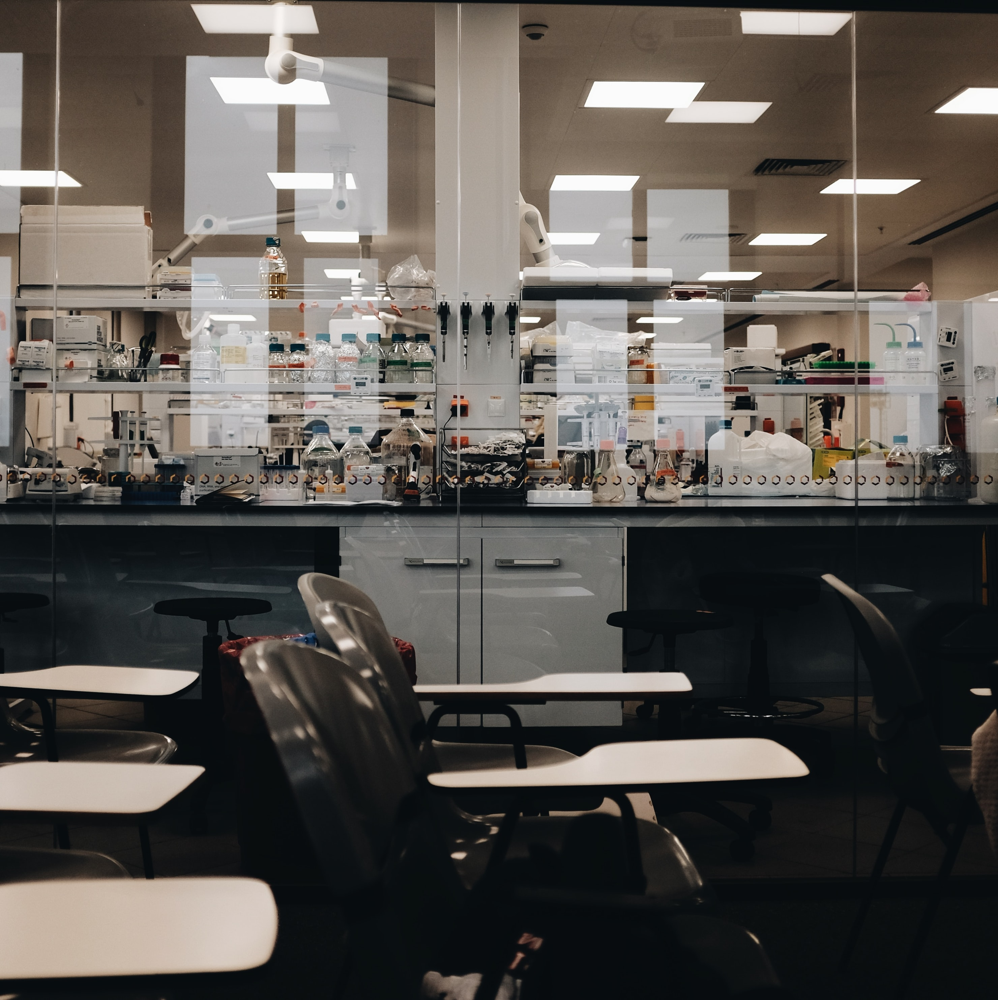

2022
August. Washington, DC.
-
WDC American Registry of Professional Animal Scientists (ARPAS) 2022 Mini Symposium
Some representative placeholder content for the first slide.

Some representative placeholder content for the second slide.

Some representative placeholder content for the third slide.
- Arpita Aditya. Title: Antagonistic mechanism of metabolites from Lactobacillus casei against enterohemorrhagic Escherichia coli. (Guest Speaker)
July 31st to August 3rd. Pittsburgh, Pennsylvania.
-
International Association for Food Protection (IAFP)
Some representative placeholder content for the first slide.
Some representative placeholder content for the second slide.
Some representative placeholder content for the third slide.
- Arpita Aditya and Debabrata Biswas. Title: Impact of seasonal variation in soil microbiome of dairy farms and risks associated with pathogen transmission. (Oral Presentation)
- Zajeba Tabashsum, Zabdiel Alvarado-Martinez, Arpita Aditya, Sanjaya Mijar, Mengfei Peng, and Debabrata Biswas. Title: Combined effect of conjugated linoleic acid over converting Lactobacillus casei and berry phenolic extracts against colonization of Campylobacter in chicken. (Oral Presentation)
- Zajeba Tabashsum, Zabdiel Alvarado-Martinez, Arpita Aditya, Anna Phung, Matthew Wall, Phuong Nguyen, and Debabrata Biswas. Title: Prevalence and antibiotic resistance pattern of Campylobacter in the dairy farms of Maryland-DC area. (Poster Presentation)
2021
July 18th to July 21st. Phoenix, Arizona.
-
International Association for Food Protection (IAFP) Annual Meeting
- Arpita Aditya, Mengfei Peng, and Debabrata Biswas. Title: Impact of Lactobacillus-originated metabolites on EHEC in collected rumen fluid. (Oral Presentation)
- Zajeba Tabashsum, Mengfei Peng, Zabdiel Alvarado-Martinez and Debabrata Biswas. Title: Ex vivo evaluation of the effectiveness of Lactobacillus metabolites with berry phenolic extracts against Campylobacter. (Oral Presentation)
2020
October 26th to October 28th. Cleveland, Ohio and Virtual.
-
International Association for Food Protection (IAFP) Annual Meeting
- Arpita Aditya, Mengfei Peng, and Debabrata Biswas. Title: Molecular mechanism of metabolites produced by Lactobacillus casei on lysis of enterohemorrhagic E. coli. (Poster Presentation)
- Zajeba Tabashsum, Mengfei Peng, Zabdiel Alvarado-Martinez, Arpita Aditya, Jacob Bhatti, Paulina De Bravo, Alana Young, and Debabrata Biswas. Title: Conjugated linoleic acid over producing Lactobacillus casei reduced colonization of Campylobacter jejuni in chicken. (Oral Presentation)
2019
November 2nd to November 5th. Chicago, Illinois.
-
100th Annual Conference of Research Workers in Animal Diseases (CRWAD)
- Arpita Aditya, Mengfei Peng, and Debabrata Biswas. Title: Metabolites produced by Lactobacillus inhibit growth and alter the virulence of enterohemorrhagic E. coli. (Poster Presentation)
- Zajeba Tabashsum, Ashley Houser, Joselyn Padilla, Debabrata Biswas. Title: Antimicrobial effect of individual phenolic compounds against Campylobacter. (Oral Presentation)
July 21st to July 24th. Louisville, Kentucky.
-
International Association for Food Protection (IAFP) Annual Meeting
- Zajeba Tabashsum, Ashley Houser, Joselyn Padilla, Debabrata Biswas. Title: Antimicrobial effect of major components of berry phenolic extract against Campylobacter. (Oral Presentation)
2018
July 23rd to July 26th. San Antonio, Texas
Annual Poultry Science Association (PSA) Meeting
- Zajeba Tabashsum, Mengfei Peng, Eliana Kahan, Debabrata Biswas. Title: Combine Antimicrobial Effect of Conjugated Linoleic Acid Overproducing Lactobacillus and Berry Pomace Phenolic Extracts on Campylobacter jejuni. (Oral Presentation)
July 8th to July 11th. Salt Lake City, Utah
-
International Association for Food Protection (IAFP) Annual Meeting
- Zajeba Tabashsum, Mengfei Peng, Cassie Bernhardt, Puja Patel, Debabrata Biswas. Title: Antimicrobial Effect of Conjugated Linoleic Acid Overproducing Lactobacillus with Berry Phenolics on Enteric Pathogens. (Oral Presentation)
- Zajeba Tabashsum, Serajus Salaheen, Alex Lebovic, Christine Mui, Anthony Dattilio, Debabrata Biswas. Title: Sanitizing Role of Berry Pomace Extracts in Controlling Enteric Pathogens on Fresh Produce. Poster Presentation
June 4th. Baltimore, Maryland.
-
American Society for Microbiology (ASM) Maryland Branch Spring Meeting
- Zajeba Tabashsum, Mengfei Peng, Cassie Bernhardt, Puja Patel, Debabrata Biswas. Title: Evaluation of the effectiveness of conjugated linoleic acid overproducing Lactobacillus with berry phenolics against zoonotic pathogens. (Poster Presentation)
2017
December 3rd to December 5th. Chicago, Illinois
-
98th Annual Conference of Research Workers in Animal Diseases (CRWAD)
- Zajeba Tabashsum, Mengfei Peng, Serajus Salaheen, Debabrata Biswas. Title: Competitive exclusion of Campylobacter jejuni by linoleic acid overproducing Lactobacillus casei. (Oral Presentation)
October 29th to October 31st. College Park, Maryland.
-
10th Mini Summit on Food Safety, Policy, and Sustainability
- Zajeba Tabashsum, Mengfei Peng, Serajus Salaheen, Catherine Comis, Debabrata Biswas. Title: Effective inhibition of Campylobacter jejuni by linoleic acid overproducing Lactobacillus casei. (Poster Presentation)
Baltimore
-
American Society for Microbiology (ASM) Maryland Branch Spring Meeting
- Zajeba Tabashsum, Mengfei Peng, Serajus Salaheen, Jungsoo Joo, Debabrata Biswas. Title: Comparison of competitive exclusion of Campylobacter jejuni by Lactobacillus casei and linoleic acid overproducing Lactobacillus casei. (Poster Presentation)